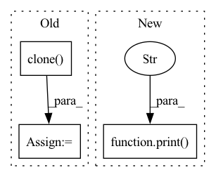

Pattern ID :19539
Before Change
KL_COST = 2e-3
ACTION_TYPE_KL_COST = 1e-1
// TODO: change to use the teacher logits
loss_he = human_policy_kl_loss(target_logits.action_type, target_logits.action_type.clone() .detach(), ACTION_TYPE_KL_COST)
// Entropy Loss:
// There is an entropy loss with weight 1e-4 on all action arguments,
After Change
KL_COST = 2e-3
ACTION_TYPE_KL_COST = 1e-1
// We change to use the teacher logits
print("trajectories.teacher_logits" , trajectories.teacher_logits) if debug else None
teacher_logits_action_type = filter_by_for_lists("action_type", trajectories.teacher_logits)
print("target_logits.action_type.shape", target_logits.action_type.shape) if debug else None
In pattern: SUPERPATTERN
Frequency: 3
Non-data size: 3
Instances Fragment ID: 63642783
Project Name: liuruoze/mini-alphastar
Commit Name: 13851e9ce6db3c3e13ec151ad1b89145aaa82ed2
Time: 2021-06-17
Author: liuruoze@163.com
File Name: alphastarmini/core/rl/compute_loss.py
M Class Name: AnonimousClass
N Class Name: AnonimousClass
M Method Name: loss_function(2)
N Method Name: loss_function(2)
M Parent Class:
N Parent Class:
M File Name: alphastarmini/core/rl/compute_loss.py
N File Name: alphastarmini/core/rl/compute_loss.py
M Start Line: 1415
M End Line: 1417
N Start Line: 1367
N End Line: 1423
Before Change
input("press enter to continue.. ")
print("cloning dataset", p.name, "to", tmp_name)
dataset= dataset.clone( tmp_name, persistent=True)
print("instantiating Detectron2 predictor")
predictor = DefaultPredictor(cfg)
After Change
pickle.dump((xs, ys, maps), f)
print(">>" , metadata)
metadata["bpp"] = xs
metadata["map"] = ys
metadata["map_per_class"] = maps
with open(p.output, "w") as f: Fragment ID: 63642782
Project Name: interdigitalinc/compressai-vision
Commit Name: 40d13da41c7e6a9b6cf5b4e123eb9f3c1705a0b6
Time: 2022-09-19
Author: sampsa.riikonen@iki.fi
File Name: compressai_vision/cli/detectron2_eval.py
M Class Name: AnonimousClass
N Class Name: AnonimousClass
M Method Name: main(1)
N Method Name: main(1)
M Parent Class:
N Parent Class:
M File Name: compressai_vision/cli/detectron2_eval.py
N File Name: compressai_vision/cli/detectron2_eval.py
M Start Line: 205
M End Line: 364
N Start Line: 78
N End Line: 390
Before Change
mses.append(to_numpy(mse).item())
val_pvars = []
inputs = self.raw_time_series[:, 0, :].clone() .unsqueeze(1).to(self.model.device)
for _ in range(100):
val_x_pred = self.model.get_prediction_trace(inputs)
pvar = PVarianceLoss()(val_x_pred, self.raw_time_series.to(val_x_pred.device))
val_pvars.append(to_numpy(pvar).item())
print(f"Validation PVariance: {np.mean(val_pvars):.3f}")After Change
mses.append(to_numpy(mse).item())
val_pvar = self.validate(100)
print(f"Validation PVariance: {val_pvar:.3f}" )
return x_pred, self.raw_time_series
def validate(self, n: int = 1):
val_pvars = [] Fragment ID: 63642786
Project Name: neurotorch/neurotorch
Commit Name: 9ba260c32491b2e046fbd60f8599ede10b9e6273
Time: 2023-02-01
Author: 93488840+AnthoDrouin@users.noreply.github.com
File Name: src/neurotorch/learning_algorithms/debug_e_prop_v5.py
M Class Name: SimplifiedEpropFinal
N Class Name: SimplifiedEpropFinal
M Method Name: train(4)
N Method Name: train(4)
M Parent Class:
N Parent Class:
M File Name: src/neurotorch/learning_algorithms/debug_e_prop_v5.py
N File Name: src/neurotorch/learning_algorithms/debug_e_prop_v5.py
M Start Line: 116
M End Line: 145
N Start Line: 126
N End Line: 146